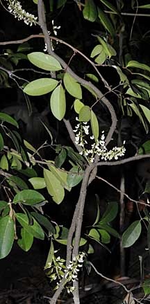
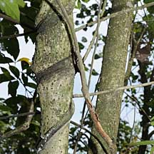
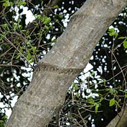
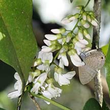
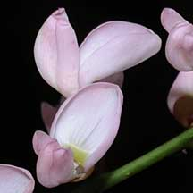
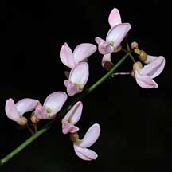
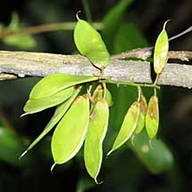
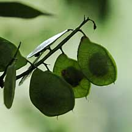
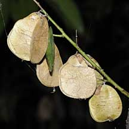

|
|
| plants text index | photo index |
| mangroves |
| Common
derris Derris trifoliata Family Fabaceae updated Jan 2013 Where seen? This climber with its three-part leaves is commonly seen twining around trees in the back mangroves. When in bloom it turns the mangrove forest into a bridal chamber in pink! The Malay name is Akar ketuil or Tuba laut. According to Hsuang Keng, it was common on our coasts and by tidal rivers including Changi, Pulau Ubin and Kranji. According to Giersen, it grows in the back mangroves preferring areas with high freshwater inputs and not too often inundated by tides. Features: A shrub or scrambling climber to 15m or more, spreading by root suckers. Stems woody, bark smooth, dark brown, corky with orange lenticels. Compound leaf made up of 3-5 leaflets eye-shaped (10-12cm long) dark green, glossy. Flowers delicate, pale pink (1.5cm) several in a loose cluster on a slender inflorescence (about 20cm long). Fruits coin-like circular flat pods (3-4cm) with 1-2 seeds. The pods are green at first, and turn brown and woody as they ripen. The pod contains air cavities and thus floats. Although the wind might also blow them around a fair bit. Role in the habitat: Like other climbers, it provides shelter for smaller creatures of the mangroves. The plants also form an interlocking framework among trees, which may add to strength of the forest against coastal storms. The plant twines around trees and shrubs and can form deep "choke" marks on trees as their trunks expand. But eventually, the trees usually prevail, breaking the vines. Thus common derris doesn't 'strangle' trees. According to the NParks Flora and Fauna website, it is the preferred local food plant for caterpillars of the dark caerulean butterfly (Jamides bochus nabonassar). The mother butterfly lays her eggs in the space between the flower buds, or in the spaces between the flower stalks and the axis of the flowering shoot. According to Butterfly Circle, it is also the host plant for the Sumatran sunbeam (Curetis saronis sumatrana), Common Awl (Hasora badra badra), White Banded Awl (Hasora taminatus malayana), Nacaduba pavana singapura and Short Banded Sailor (Phaedyma columella singa). Human uses: According to Burkill, the plant roots are also used to produce 'tuba', a poison used in poison arrow and as an insecticide, particularly in vegetable gardening. It has some medicinal uses, and the twinning stems are also used as rough cords. According to Geisen, the commercial fish poison 'rotenone' or Derris dust is derived from the tuberous roots of another South East Asian species, D. elliptica. Derris species are best known for their use as a fish poison, with Derris trifoliata mentioned as the weakest source of such fish poisons. Burkill describes the use of Derris in fishing: "When a big fish-hunt is planned, large amounts of Derris root is pounded and soaked in water. When whole canoes, full of water and pounded Derris, are upset into the river or pong, a very rapid stupefying of the fish occurs, enabling them to be lifted out of the water by hand. This is preceeded by wild attempts of the victims to escape, in which they expose themselves to spearing, and in this spearing is the chief excitement of the sport. After the poisoning, the water soon becomes pure again. This of course is chiefly by diffusion, but also because aqueous solutions of the poison decompose rather quickly." |
 Sungei Pandan, Jun 09  Sungei Buloh, Sep 09  Scars of derris. |
|
 Sungei Buloh Wetland Reserve, Mar 09 |
 |
 Pulau Semakau, Jan 09 |
|
 Pulau Ubin, Aug 09 |
 Pasir Ris, Apr 09 |
 Sungei Pandan, Jun 09 |
| Common derris on Singapore shores |
| Photos of Common derris for free download from wildsingapore flickr |
| Distribution in Singapore on this wildsingapore flickr map |
|
Links
References
|
|
|